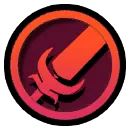
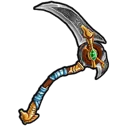
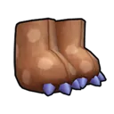
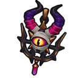

Cavaleiro Sombrio
Lutador
Seres terríveis nascidos de poderes sombrios. Dizem que eles podem devorar a alma de suas vítimas.
Atributos
Ataque (100)
0
Defesa (100)
0
Vida (100)
0
Hypermax: o build mais forte
22º de 42 classes no ranking Hypermax
Poder no placar
763.259
Poder no perfil
610.607
Ataque
57.202
Defesa
67.455
Vida
35.389
Crítico
5%
Dano crítico
×2
Elemento
185

Foice do Garanhão T16
Runa: Elemento Oblívio · Espírito: Espírito de Titã
Armadura da Invencibilidade T14
Runa: Elemento Apoteose · Espírito: Espírito de Titã
Cabeça de Ursinho de Pelúcia T15
Runa: Elemento Oblívio · Espírito: Espírito de Titã

Pés de Ursinho de Pelúcia T15
Runa: Elemento Oblívio · Espírito: Espírito de Titã

Espectador Nefasto T16
Runa: Elemento Oblívio · Espírito: Espírito de Titã
Avatar da Magia T15
Runa: Elemento Oblívio · Espírito: Espírito de Titã
Habilidades: Banquete de Almas T4, À Prova de Balas T4, Além do Imortal T4, Deus da Guerra Ancião T4, Grande como Granito T4
Calculado só com os dados do jogo: qualidade Lendária, Forjado nas Estrelas, Ascensão e Transcendência, nível 50.